인터뷰 중 톡클라우드를 구독해본
7명중 4명은, 소중한 데이터를
잃어버린 후 구독했어요.
왜 데이터를 잃어버리고,
복구하고 있을까요?
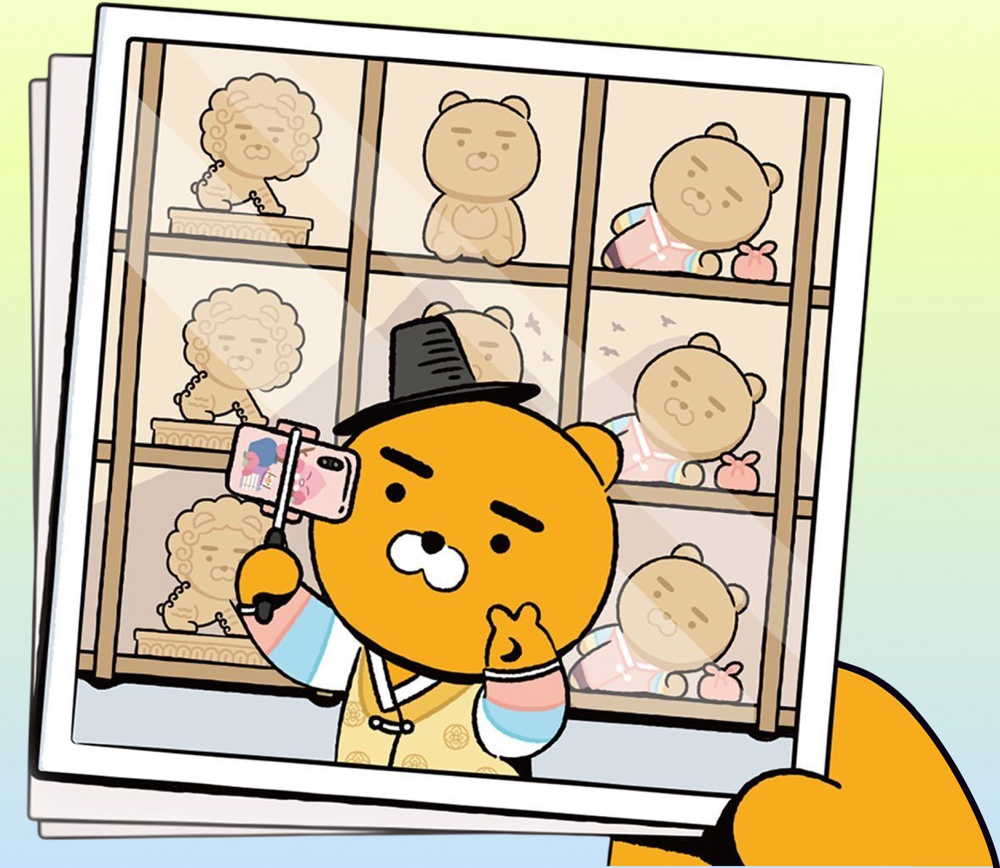
Problem
많은 유저들은 데이터를
잃어버리는지 모르고 있었어요.
"23년도에 학생회장을 했어요.
톡클라우드를 안 쓰면 1년인가 지나면 날아가잖아요.
행사 공지를 할 때 기존 사진이나 자료를 써야 했는데,
작년 공지를 참고하려니 날아가 있었어요.
내년 것을 남겨 두려면 구독해야 한다는 걸 알고 그때부터 구독했어요."
"용량 꽉차서 구독 했지만,
이미지, 동영상 만료들도 예전에 잃어버렸어서요."
"아니, 난 사진 복구하려고 했거든요.
복구되는 줄 알고 구독했는데
확인해보니 없어서 너무 화가 나서 구독 취소했어요."
User Test
어떻게 하면
톡클라우드의 필요성을 느낄까?
Participant
- 톡클라우드를 구독하지 않아 데이터를 손실해본 사람
- 데이터가 손실되는지 모르는 사람
- 톡클라우드 구독을 취소해본 사람
Recall
OOO님은 5남매 가족 단톡방의 막내딸이에요. 어머니께서 외할머니께 보여드릴 가족사진이 다운이 안 된다고 하시는데, 한번 찾아 드려 보시겠어요?
확인할 점 문제 해결
- 자신에게도 이런 데이터 손실이 치명적일 거라 생각하는가?
- 톡클라우드로 데이터를 복구하고 싶은가?
- 톡클라우드를 써야 사라지는 파일이 보존된다는 걸 인지하는가?
- 기존 발생 상황이 해결되었다고 느끼는가?
확인할 점 솔루션 타당성, 품질
- 톡클라우드 구독까지 자연스럽게 이어지는가?
- 톡클라우드 기능을 정확히 이해했는가?
- 톡클라우드 권유가 불편하게 느껴지는가? (광고 거부감)
- 톡클라우드를 사용할 것 같은가?
소식탭을 활용하고
단톡방의 Recap으로 추억을 되돌아 봐요.
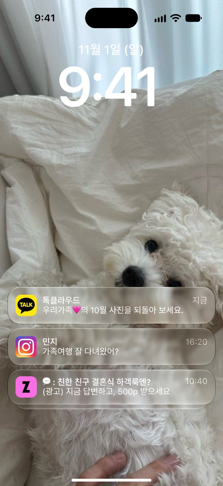
1톡클라우드 푸시 알림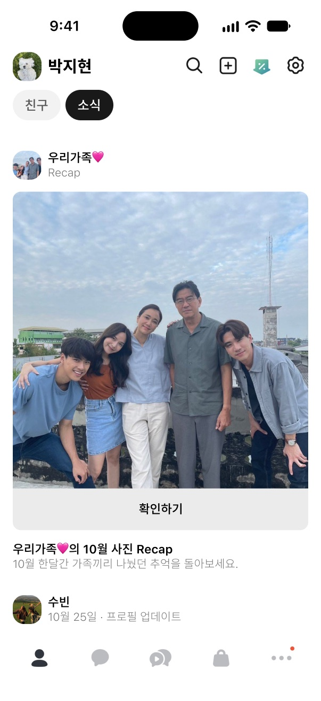
2소식탭의 10월 사진 Recap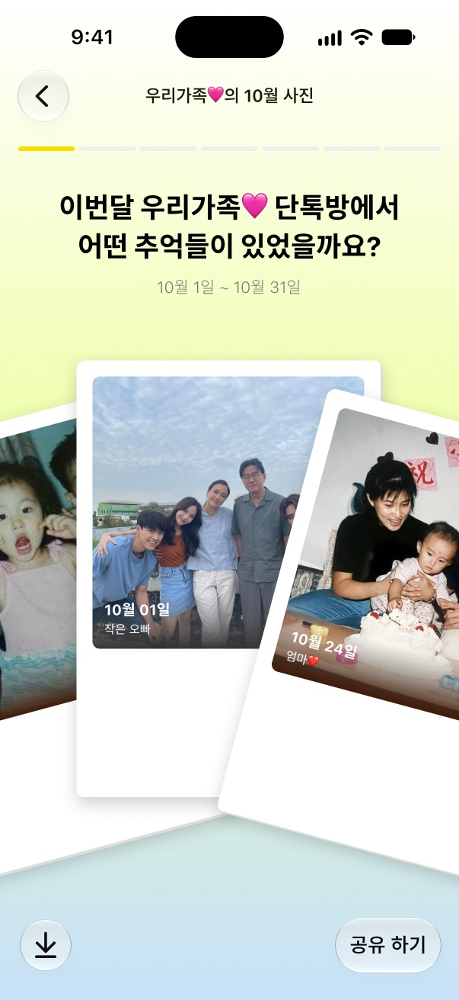
3한 달 추억 돌아보기- 4사진과 그때 나눈 대화
- 5마지막에 보관 만료 안내
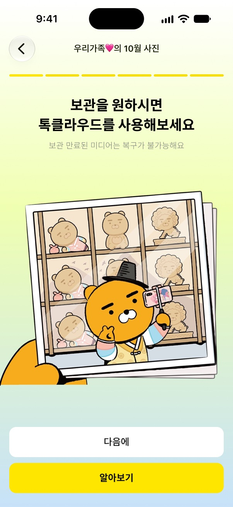
6톡클라우드 소개
UT 1차 · 30대 OO원 톡클라우드를 알지만 사용하지 않음
"카톡은 메신저로만 쓰는데 소식은 SNS 쪽에 가까워요.
카톡은 SNS가 아니라서 소식을 모아 보고 싶지 않아요."
"애초에 광고로 인식해서 탭탭탭으로 넘겼어요."
"광고 같아서 다시 보고 싶지 않아요. Recap도 관심사가 아니에요."
"처음 안내 문구 없이 추억을 되돌아보는 듯한 정보를 주는 게 별로예요."
1차 결과 · 결론
- 소식과 톡클라우드의 연관성이 부족했어요. 푸시를 누르면 대화방 내용일 거라 생각했고, 톡클라우드 정보는 인지하지 못했어요.
- 만료 안내는 후반이 아니라 먼저 보여줘야 해요.
- 상황 시나리오를 구체화해야 해요. "어머니가 갤러리에서 찾아볼 수 있지 않나?"
- 기존 카카오톡 안내 페이지(미디어 만료, 톡클라우드 안내)의 문구에 오해 소지가 있다는 걸 발견했어요.
톡클라우드가
광고같이 느껴지지 않게
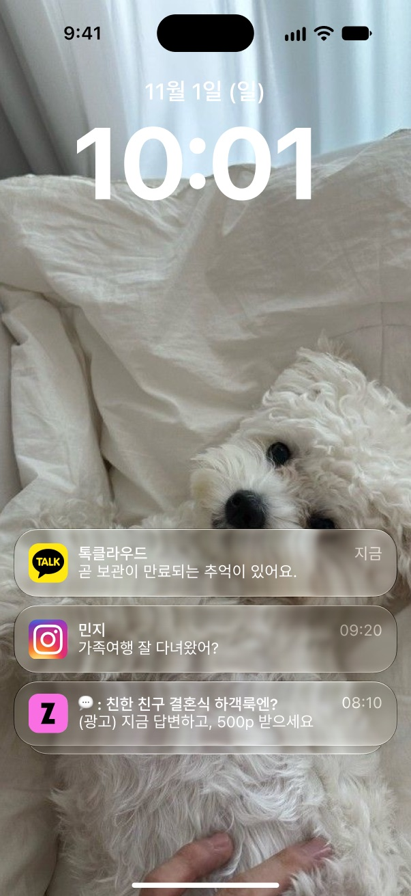
1톡클라우드 푸시 알림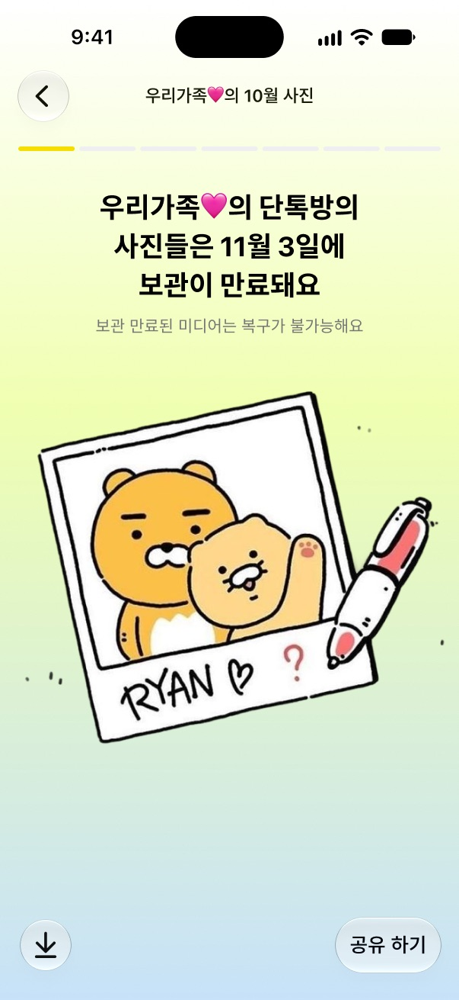
2보관 만료 안내를 먼저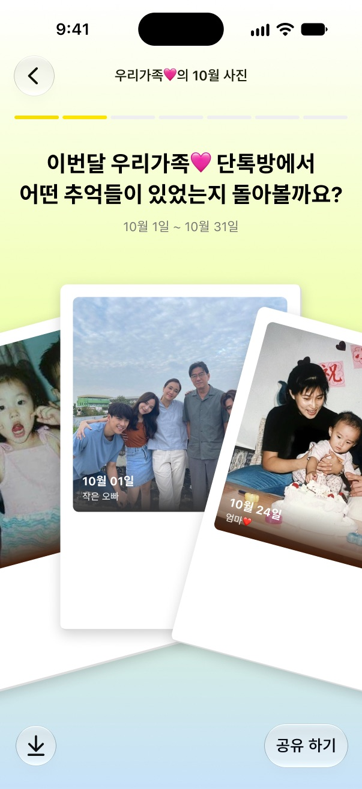
3단톡방 추억 돌아보기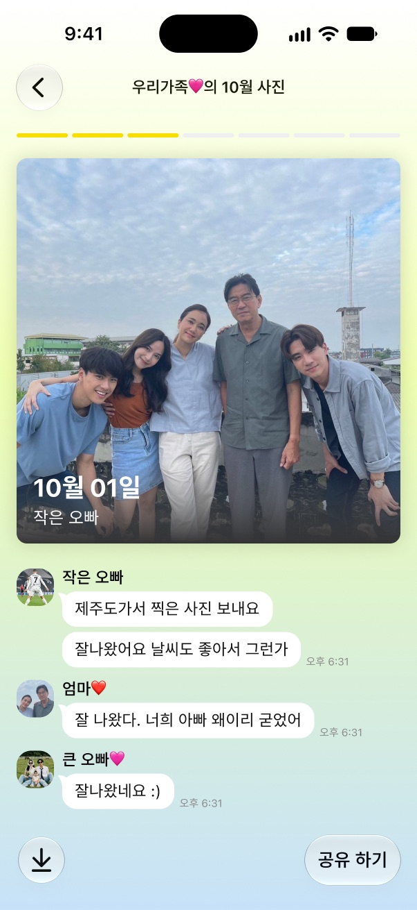
4사진과 그때 나눈 대화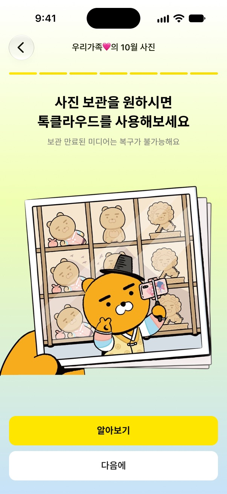
5톡클라우드 권유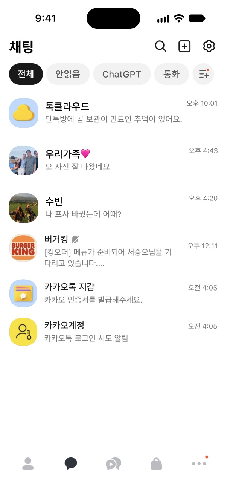
6채팅 목록에 남는 알림
"11월 3일에 모든 사진이 날아간다는 건가?"
3차 · 20대 OO아"뭔가 좀 괘씸하다. 이걸 4천 원이나 주고 사라고?
흠.. 일단 한 달 써 볼 것 같아요."
"광고 같아서요. 테스트라서 켜 보라고 하니까 켜 본 거지,
평소엔 안 눌러 볼 것 같아요."
"제 나이에서는 카톡에서 저장할 일이 많지 않아요.
부모님 세대라면 자녀나 손주가 보낸 사진이
만료되지 않게 많이 쓸 것 같아요."
"가족사진은 누군가 보낸 거고 그 사람이 갖고 있으니까,
만료돼도 상관없어요."
관찰: 10월 1일 사진을 작은 오빠가 올렸다는 걸 알아보지 못했어요. 사진을 보낸 사람이 누군지 모르면 Recap이 이해되지 않아요.
Found · UT 2·3차
데이터를 복구할수 있다고
오해하고 있었어요.
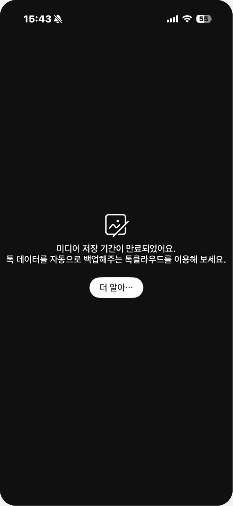
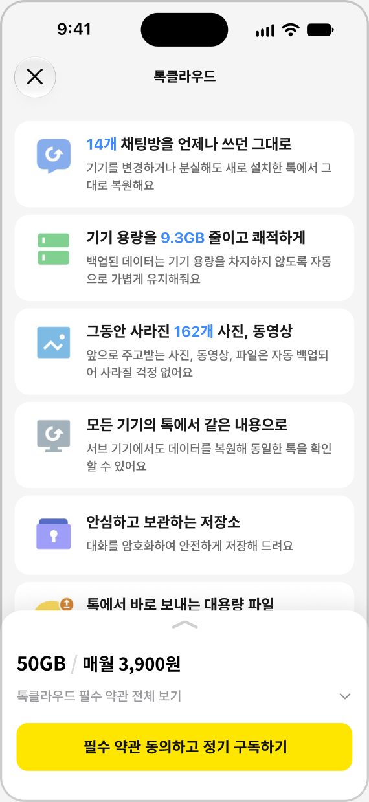
어느 글을 읽고 그렇게 생각하셨어요?
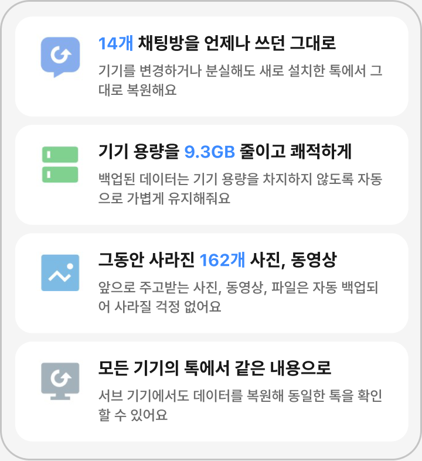
그동안 사라진 162개 사진, 동영상"을
살려 준다는 뜻으로 알았어요.
기한이 만료된 안내를 보고도
더 알아보기를 누르신 이유가 있을까요?
일말의 희망이라도 있나 싶어서요.
상세 페이지를 읽어 보셨는데,
복구된다고 생각하신 건가요?
저는 복구된다고 생각했어요.
"구독하면 예전 사진까지 볼 수 있는 줄 알고
결제했다가 바로 취소했어요."
"아니, 난 사진 복구하려고 했거든요.
복구되는 줄 알고 구독 했는데
확인해보니 없어서 너무 화가 나서 구독 취소했어요."
Next
그래서 연령별로
솔루션을 다시 만들어요.
2030세대
파일 누락
20대에게 사진은 매력적인 선택지가 아니에요.
40~64세 중장년층
사진 · 추억, 가족
자녀나 손주가 보낸 사진이 만료되지 않게.